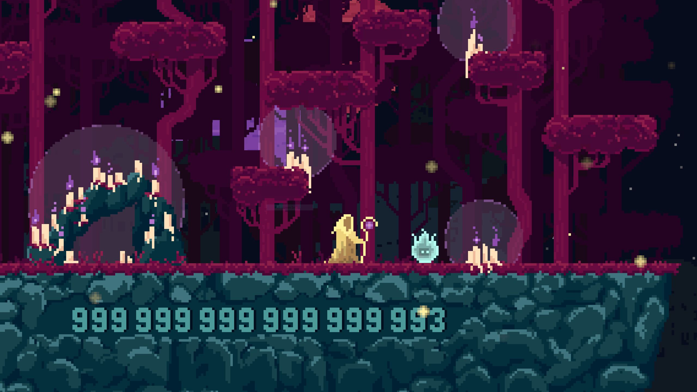
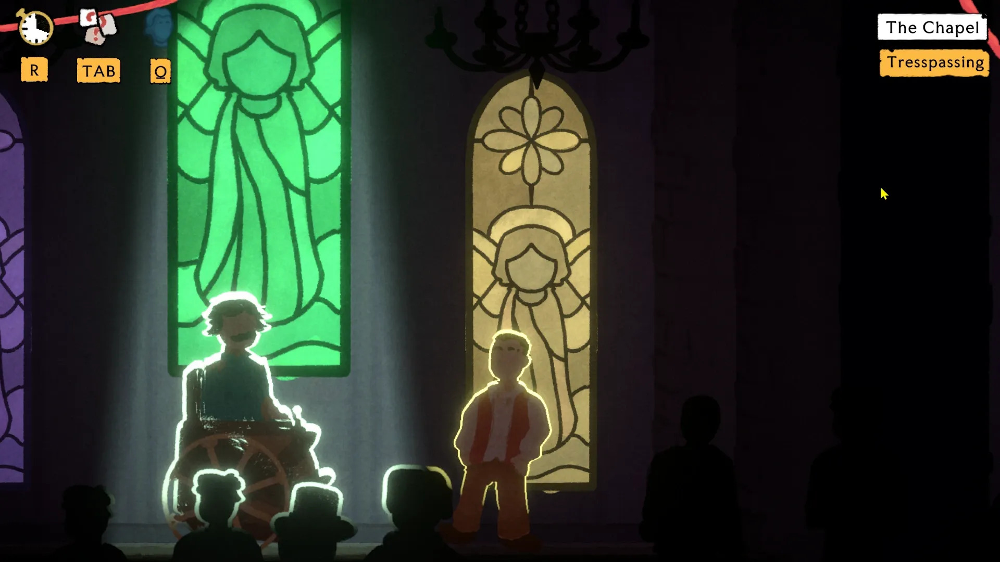
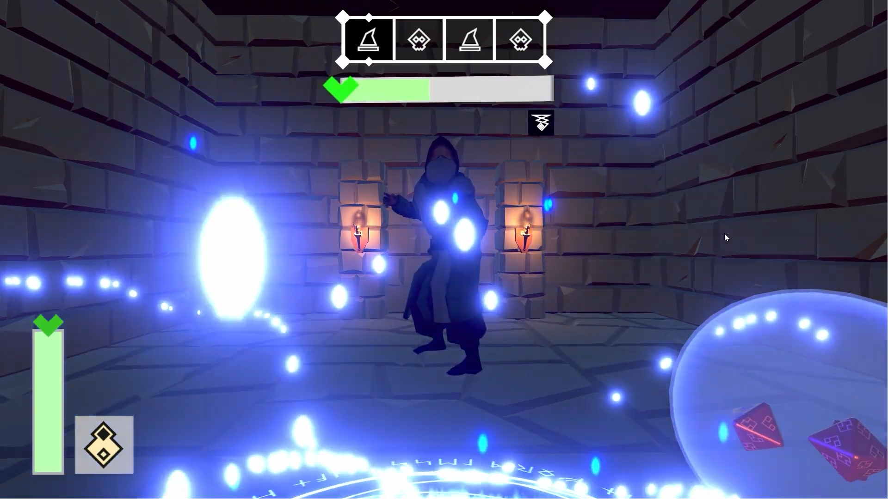
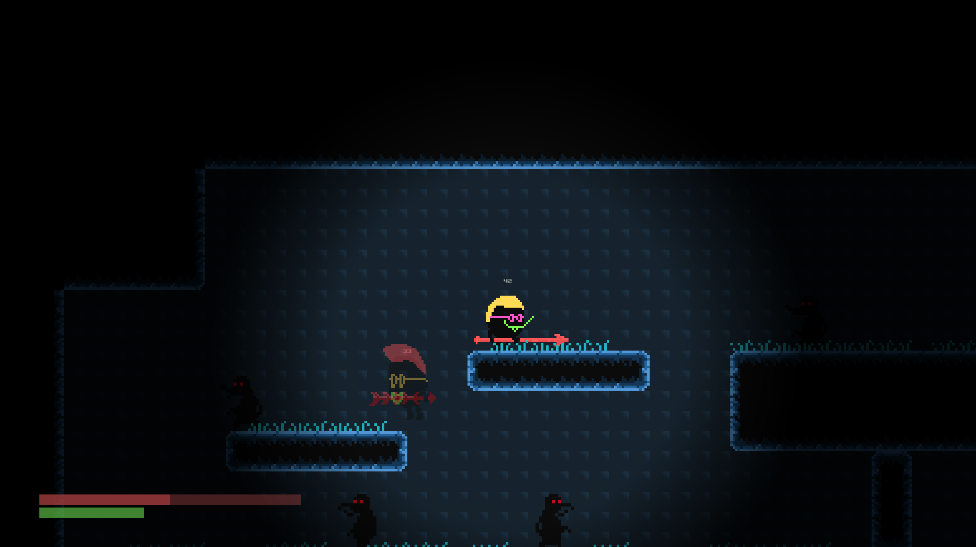
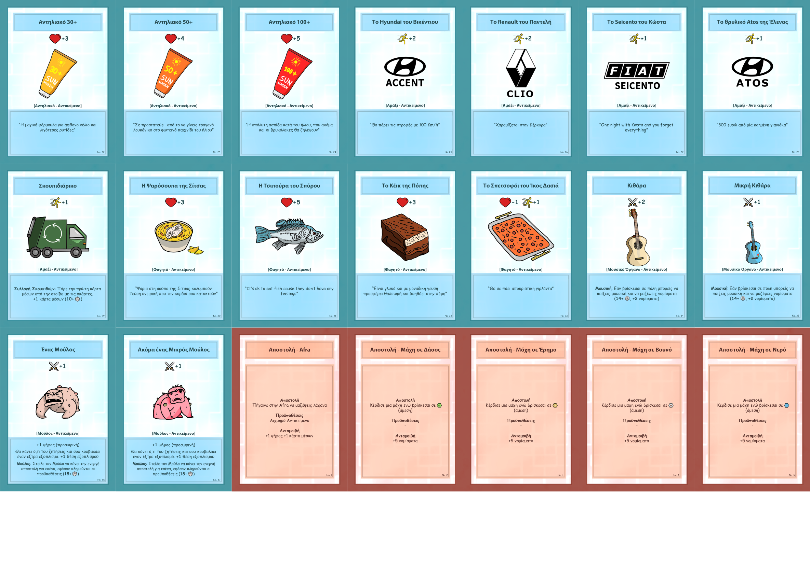

The Unfortunates
A narrative-heavy “cozy dystopia” adventure set in a surreal branch of purgatory, where players guide newly arrived spirits toward reincarnation through conversations and small but emotionally charged choices.


A narrative-heavy “cozy dystopia” adventure set in a surreal branch of purgatory, where players guide newly arrived spirits toward reincarnation through conversations and small but emotionally charged choices.

A time-loop murder mystery set in a steampunk-inspired 18th-century France, where two thieves use disguises, stealth, and social engineering to uncover a noble conspiracy.
A technical arcade shooter prototype built to showcase new subsystems added to the Shard game engine, including audio, sprite handling, and ECS refactoring.

A single-player, turn-based 3D first-person dungeon game where players fight monsters, collect treasure, and try to escape a ruined dungeon through strategic combat and resource decisions.

An experimental 2D multiplayer shooter for shared physical spaces, where players use their smartphones as wireless controllers to battle on a large-scale projection.
A local multiplayer third-person free-for-all shooter for two players, built around sandbox combat, split-screen play, and physics-based shooting in a 3D environment.

A 2D dungeon game where recordings of the player’s previous actions return as enemies, making each run harder and turning repetition into a core gameplay system.


A competitive multiplayer board game about becoming the next mayor of Corfu, built around randomized systems, player rivalry, and strategic decision-making.